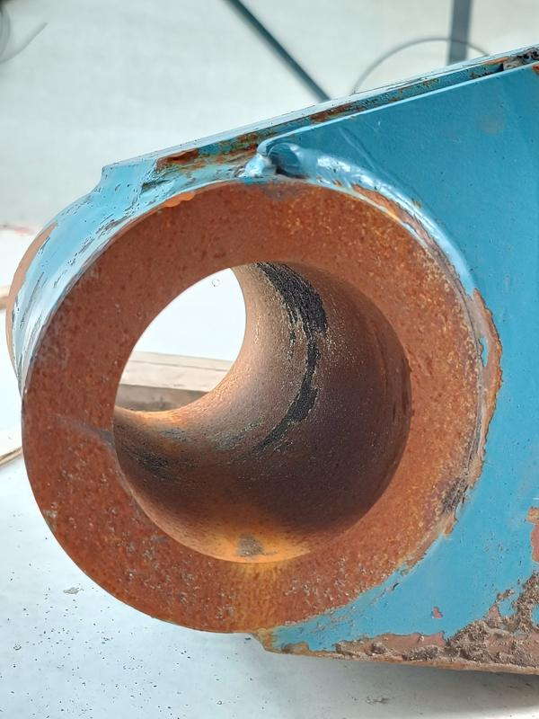
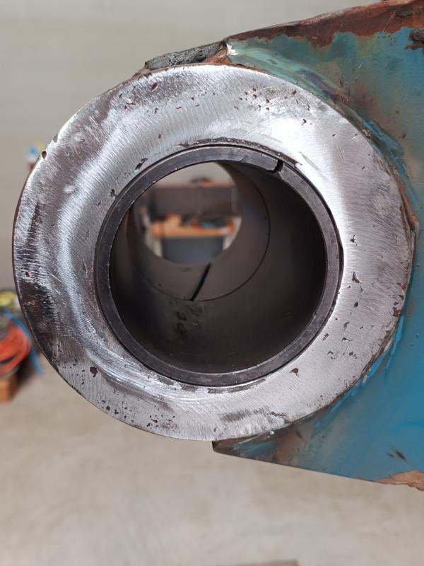
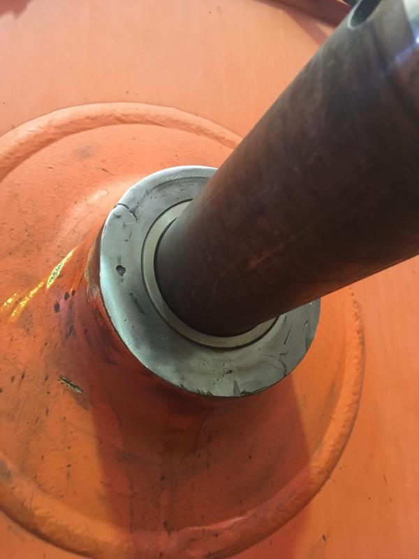

Mobiel kotteren
Uitgesleten of ovale gaten terug rond en op maat. Ook meerdere gaten in één lijn.
Mobiel kotterenWij herstellen versleten pen-en-gatverbindingen van graafmachines, wielladers en kranen met mobiel kotteren en oplassen, rechtstreeks aan uw machine.
Na jaren intensief werk slijten de pen-en-gatverbindingen van elke machine. De bussen slijten uit, de gaten worden ovaal en er ontstaat speling. De machinist verliest precisie en andere onderdelen slijten sneller mee.
Wij komen met een mobiele kotterunit naar u toe, lassen het versleten gat op en kotteren het terug naar de originele maat, rechtstreeks aan de machine. U hoeft niets te transporteren of nieuwe onderdelen te kopen.
Meer over mobiel kotteren

Van versleten naar als nieuw. Zie hoe we een ovaal uitgesleten gat in een kraanarm ter plaatse opgelast en terug op maat gekotterd hebben, zonder de arm te vervangen. Bekijk dit project →
Enkele herstellingen aan kraanarmen, graafbakken, grijpers en wielladers.
Uitgesleten of ovale gaten terug rond en op maat. Ook meerdere gaten in één lijn.
Mobiel kotteren
Te ver uitgesleten gaten automatisch opgelast en daarna exact op de originele maat gekotterd.
Oplassen van gaten
Gaten vergroten om bussen te plaatsen, versleten bussen vervangen, klaar voor originele pennen.
Bussen monterenVanuit Rijkevorsel (Kempen) komen we mobiel kotteren bij aannemers, verhuurbedrijven en recyclagebedrijven, van Turnhout en Antwerpen tot Hasselt, Gent en Brussel:
Nee. Wij komen met onze uitgeruste servicebus naar uw locatie. Uw machine hoeft niet getransporteerd te worden en is meteen na de herstelling weer inzetbaar.
Nee. De demontage blijft beperkt tot het draaipunt dat we herstellen. De rest van de machine blijft gewoon gemonteerd.
In heel België. Onze uitvalsbasis is Rijkevorsel (provincie Antwerpen), van daaruit rijden we naar uw werf, bedrijf of werkplaats.
Bel 0479 73 29 70 of stuur een e-mail naar RC-tech@skynet.be. Stuur gerust foto's van het versleten draaipunt mee: zo kunnen we sneller een inschatting maken.
Stuur ons een e-mail met foto's en we laten snel weten wat mogelijk is.